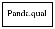

Panda.qual Reference Manual
Packages
pandaseq-2
Panda
qual
log_probability
probability
compute_offset
nt
phred
qual
Object Hierarchy:

Description:
public
struct
qual
A single nucleotide with quality information
Namespace:
Panda
Package:
pandaseq-2
Content:
Properties:
public
double
log_probability
{
get
; }
Convert the PHRED quality score to a log probability.
public
double
probability
{
get
; }
Convert the PHRED quality score to a probability.
Static methods:
public
static
size_t
compute_offset
(
double
threshold,
bool
reverse,
qual
[] haystack,
Nt
[] needle)
Find the best offset of a small sequence in a large sequence.
Fields:
public
Nt
nt
The nucleotide
public
char
phred
The quality score as a PHRED score